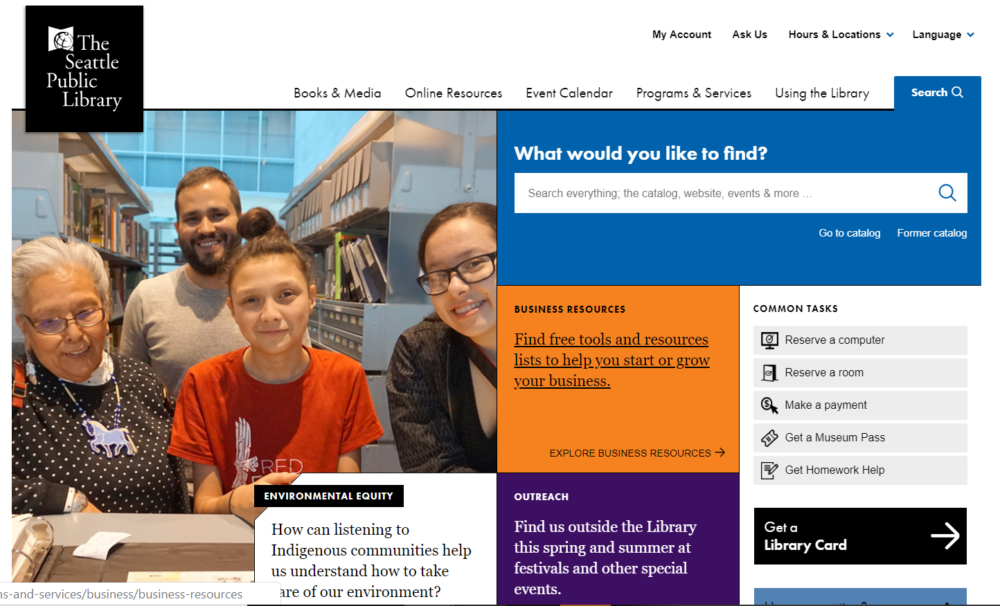
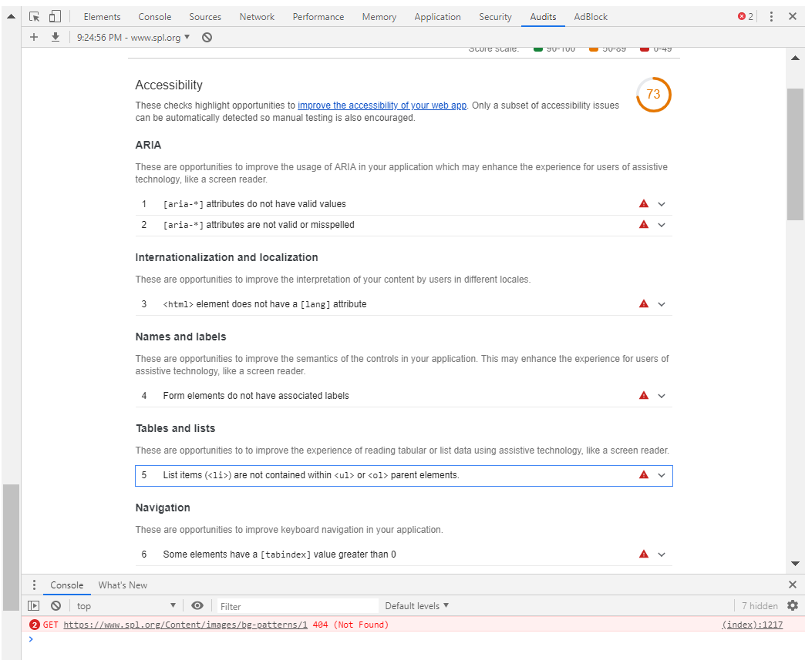
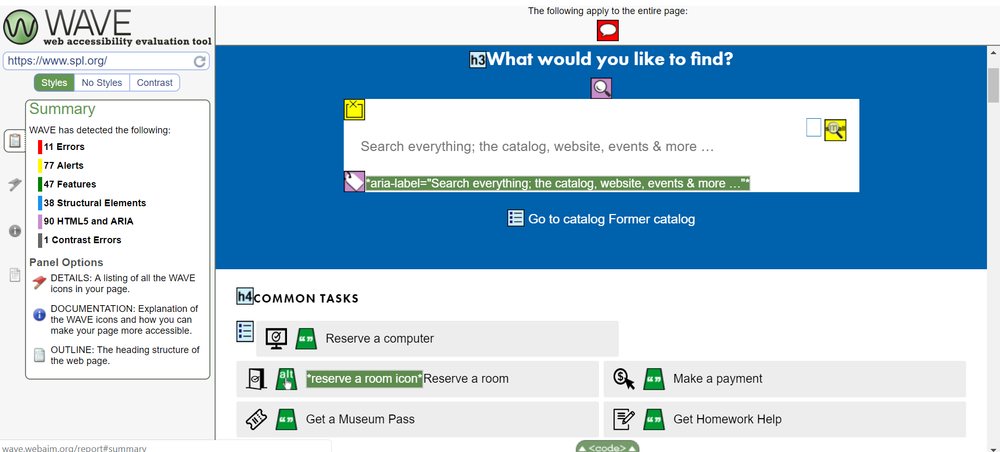

The Web is For Everyone
This post is a report for my WATS 4010 class on Usability. This week our topic was accessibility, and the assignment was to find a website, choose what tools we wished to use, and discern if it is compliant with the Federal Government's Section 508 accessibility requirements, and the W3C's Web Accessibility Initiative (WAI). The website I reviewed for this assignment is The Seattle Public Library's website.
The Seattle Public Library's website recently went through a major overhaul and the new version went live in 2018. One of the goals of the new redesign was to make the website compliant with the W3C's accessibility guidelines, so I thought it would be a good test subject. I use this website regularly to put books on hold and access online learning tools, including Lynda.com. The library has produced a video promoting their commitment to closing the digital divide with their services, you can view it here.
Google provides a program (Lighthouse) to help analyse websites for accessibility, but they encourage developers to do a few assessments themselves before running it. Rob Dobson provides a great sample walk through on Google's Web Fundamental Section. I will put a link to his article in the resources at the bottom of the page.
A screen shot of The Seattle Public Library's home page on their website is shown below.
SPL - Home Page
On my first walk through of SPL's website, I checked to see if the tab key could be used to navigate through its pages. This feature seemed to be a regular one, and the analytics tool I ran afterwards only caught one error in this category.
The second feature Dobson looks for is a cascading series of headings and font sizes that show the general structure of the website. This is not only for screen readers but also for the younger generation that read websites quickly, and initially scan headlines looking for specific content. In SPL's website, they have made the decision to use a larger font for blocks of text that are clickable, and these font sizes are larger than the heading above the link. This can be seen in the screen shot above in the blocks of text around the first image. This large paragraph font obscures the heading and slows down scanning the website, and the analytics tools I used also flagged this design choice. These paragraphs change on hover to underlined text, to show their clickablility, and I do not feel the larger font is necessary to make them stand out.
The last item on my initial walk through was to check for color and contrast, and this was well done throughout the site. If you go back to the picture above, the white text "Environmental Equity" has been bordered with black to make it stand out on its white background. I did feel some of the text was pretty small at the bottom of the page, and Google flagged this as well.
After walking through the website myself, I ran it through Google's Lighthouse tool. The items listed below are required by the WAI, and are expected by Lighthouse. A link to Lighthouse is in the resources below.
- Buttons must have an accessible name.
- Document must have a title element.
- Every form element must have a label.
- Every image must have an alt attribute.
- No element can have a tab index attribute greater than 0.
Google gave SPL's website a 73% score for accessibility, which seems low for a website that was just redesigned, in part to become more compliant. The errors it listed were Aria attributes that do not have valid values or are misspelled, an html element that does not have a lang attribute, form elements without required labels, list items without an ol or ul parent element, and some elements have a tab index greater than zero. A recording of this errors is shown below.
SPL - errors, Lighthouse
After running the Lighthouse tool I ran SPL's website through the WAVE test provided by webaim.org. This test seems much more through, as it flags the document where errors are occurring. The errors it found were similar to the ones Lighthouse found (eleven errors), but having a visual of elements analyzed, and visually flagging errors, makes an inspection of the errors much easier. I love this tool and will always run my own websites through it in the future. A screen shot of Wave's analysis is shown below, and you will find a link to webaim.org in the resource list at the bottom of this page.
SPL - errors, Wave
One of the more serious errors WAVE found was missing button alt tags in the social media icons at the bottom of the page. Although all the links to the icons are functional, a screen reader will not show their existence.
Conclusions
The accessibility issues in this website are not overwhelming and I feel they could be remedied easily. Making sure all forms have labels, and images an alt description, would quickly improve the library's overall score. I find it surprising Wave or Lighthouse were either not used by the Seattle Library's web developers, or they were used and the errors were allowed to remain unfixed. As an afterthought, I ran the SPL's website through another check, this time for "best practices" and the website was only at 50% success here, a screen shot of this analysis can be seen in the photo below. This is again surprising for a website that was redesigned recently in 2018. I plan on contacting the library and suggest they hire me as a consultant.
SPL, Best Practices rating

Resources:
Krug, Steve. Don't Make Me Think, Revisited : a Common Sense Approach to Web Usability. [Berkeley, Calif.] :New Riders, 2014.
Dobson, Rob. Google, Web fundamentals. How to do an accessability review, Link here
Google. Tools for Developers. Lighthouse. Web. 2019. Lighthouse link.
webaim.org. WAVE. Web. 2019. WAVE link